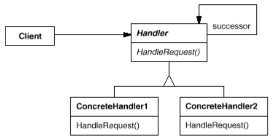
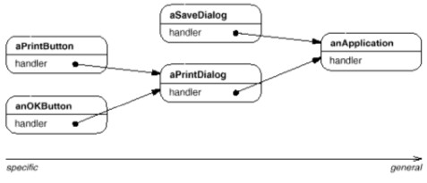
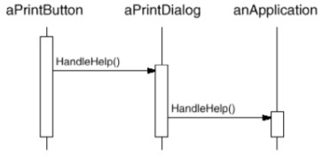

But : Découpler l'émetteur d'une requête du receveur en permettant à plus d'un objet de gérer la requête.
Faire un chaîne de receveurs, et passer la requête à la chaîne jusqu'à ce qu'un receveur gère la requête.
Faire un chaîne de receveurs, et passer la requête à la chaîne jusqu'à ce qu'un receveur gère la requête.
Structure
Ce pattern fournit un mécanisme assez simple qui permet de fabriquer la "chaîne".Le mécanisme est basé sur une abstraction (
Handler) contenant une méthode (handleRequest()), ainsi qu'un champ successor

Exemples
Exemple GOF
Cas de la gestion du clic droit de la souris pour gérer un menu contextuel d'aide.Le pattern peut être utilisé pour transmettre la requête, en allant toujours du particulier au général.
Par exemple, si on fait un clic droit sur un bouton : si le bouton a une aide spécifique, elle va être affichée, sinon il passe la requête à son conteneur, qui refait la même chose.  La requête est passée d'un maillon à l'autre de la chaîne jusqu'à ce qu'elle soit gérée (ou pas). 
Exemple wikipedia
Code dans WikipediaDemo.javaSystème de validation de dépenses au sein d'une entreprise où différentes personnes sont habilitées à valider certaines sommes maximales.
L'abstraction
PurchasePower représente une telle personne :
// ======= Abstract handler =======
abstract class PurchasePower {
protected static final double BASE = 100;
protected PurchasePower successor;
abstract protected double getAllowable();
abstract protected String getRole();
public void setSuccessor(PurchasePower successor) {
this.successor = successor;
}
public void handleRequest(PurchaseRequest request) {
if (request.getAmount() < this.getAllowable()) {
System.out.println(request.getAmount() + " $ approved by " + this.getRole());
} else if (successor != null) {
successor.handleRequest(request);
}
}
}
Chaque handler concret représente un acteur particulier :
// ======= Concrete handlers =======
class Manager extends PurchasePower {
protected double getAllowable() { return BASE * 10; }
protected String getRole() { return "Manager"; }
}
class Director extends PurchasePower {
protected double getAllowable() { return BASE * 20; }
protected String getRole() { return "Director"; }
}
// ...
Le client instancie les différents acteurs et créé la chaîne :
public class WikipediaDemo {
// ======= Client =======
public static void main(String[] args) {
// create chain of responsability
Manager manager = new Manager();
Director director = new Director();
VicePresident vp = new VicePresident();
President president = new President();
Nobody nobody = new Nobody();
manager.setSuccessor(director);
director.setSuccessor(vp);
vp.setSuccessor(president);
president.setSuccessor(nobody);
// ...
try {
while (true) {
System.out.println("\nEnter the amount to check who should approve your expenditure.");
System.out.print("> ");
double d = Double.parseDouble(new BufferedReader(new InputStreamReader(System.in)).readLine());
manager.handleRequest(new PurchaseRequest(d));
}
}
catch (Exception e) {
System.exit(1);
}
}
}
Bien remarquer que la chaîne est organisée du "plus petit au plus grand", et que lorsqu'on appelle handleRequest(), on l'appelle sur le "plus petit".
Remarques
- Permet d'éviter d'avoir du code du type
if ... else if ... else if ....... else ... endif - Le client ne sait pas quel objet va gérer sa requête.
- L'exemple du HelpHandler montre que ce pattern se couple souvent naturellement avec un Composite, le successeur d'un élément étant son parent.